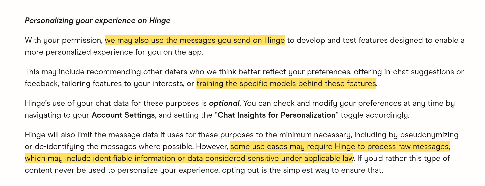

Hinge Help Center · new page “How Does Hinge Use My Messages” · created Oct 28, 2026
Your messages can train Hinge’s models. Some uses need them raw.

Screenshot of help.hinge.co, Nov 14, 2026 (highlights added).